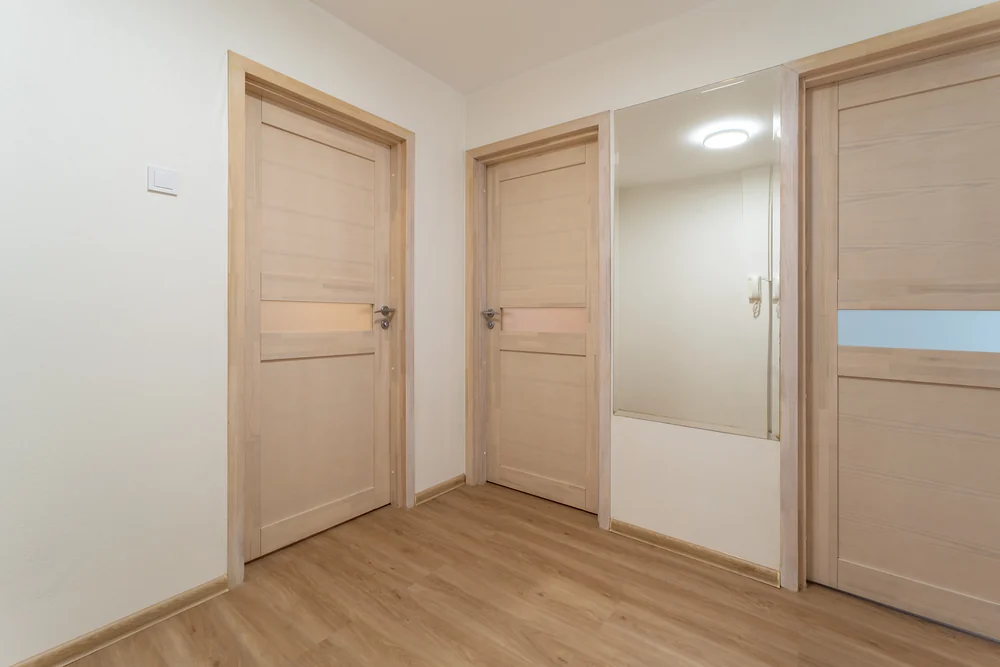
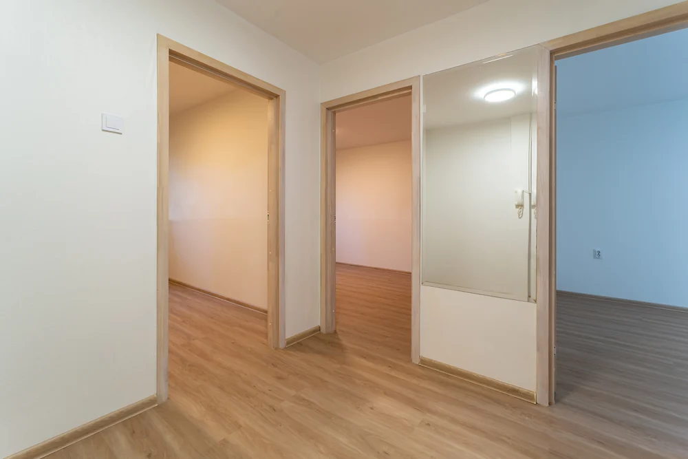
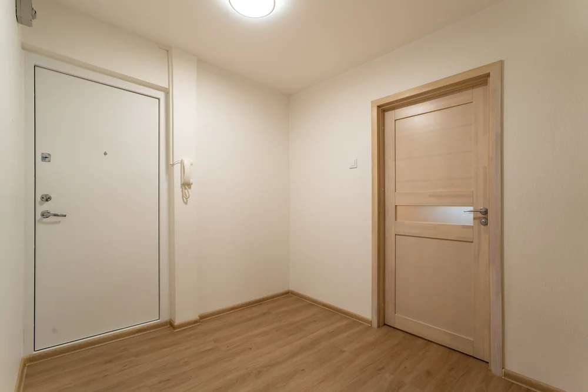
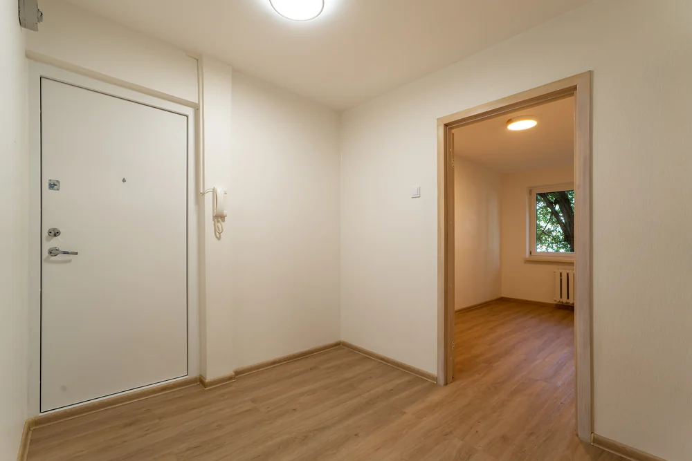

Lühivastus
Tühjas ruumis ei ole silmal midagi, mille vastu suurust mõõta – seepärast tundub ta fotol väiksem. Lahendus on kolmene: pildista nurgast nii, et kaadris oleks põranda ja lae suhe näha, kasuta ukseavasid ja aknaid mõõdupuuna, ja kaalu paari toa puhul virtuaalset stagingut.
Tühi korter on kinnisvarafotograafi jaoks ootamatult raske. Kõik on puhas, midagi ei ole kaadrist ära koristada – ja tulemus tuleb ikka kuidagi tühi ja külm.
Põhjus on lihtne: aju hindab ruumi suurust võrdluse kaudu. Kui kaadris ei ole ühtegi eset, mille suurust ta teab, ei ole tal millegagi võrrelda.
Tühjas toas on mõõdupuid rohkem, kui esmapilgul tundub. Iga selline detail annab silmale kinnituspunkti:
Praktikas tähendab see, et tühja tuba pildistatakse nii, et kaadrisse jääb vähemalt üks uks või aken tervikuna. Puhas seinapind ilma ühegi detailita ei ütle ostjale suuruse kohta midagi.
Sisustatud korteris jutustavad mööbel ja asjad ise ära, mis toas mida tehakse. Tühjas korteris tuleb see töö kaadril ära teha. Kõige tugevam võte on pildistada läbi ukseavade, nii et taustal avaneks järgmine ruum.
Kõige lihtsam võte on ühtlasi kõige odavam: ava uksed enne pildistamist. Kinnine uks lõpetab kaadri ära. Avatud uks viib pilgu järgmisse ruumi ja annab korterile sügavuse, mida tühjal seinal ei ole.

Uksed kinni
Uksed lahtiEsikus on vahe kõige suurem, sest seal ei olegi kaadris palju muud peale uste.

Uksed kinni
Uksed lahtiNii saab ostja aru korteri plaanist ka ilma jooniseta – ja plaanist arusaamine on tühja korteri puhul peaaegu tähtsam kui üksikute tubade ilu.
Sisustatud toas murravad mööbel ja tekstiil valgust ja loovad varje. Tühjas toas ei ole midagi, mis varje teeks – tulemus on lame ja seinad muutuvad üheks pinnaks.
Seepärast tasub tühja ruumi pildistada siis, kui aknast tuleb suunatud valgust: hommikupoolikul või pärastlõunal, mitte täiesti pilves keskpäeval. Üks pikk vari põrandal annab ruumile kuju.
Tühi ei tähenda puhas. Tühjas korteris paistavad kõik pisiasjad välja: naelaaugud, seinaplekid mööbli tagant, tolmuriba põrandaliistul, kleeplindi jäänused. Enne pildistamist tasub üks korralik ring peale teha – mööbli all olnud pinnad on tavaliselt kõige halvemas seisus.
Staging ei ole tühja korteri puhul kohustuslik, aga kahes olukorras on ta peaaegu alati mõistlik:
Ja üks olukord, kus ta pigem ei tasu: kui korter müüakse remondiobjektina. Siis otsib ostja potentsiaali ja sisustatud pilt lööb ootused paigast. Sellest, kus jookseb aususe piir, kirjutasime eraldi.
Tühja korteri puhul kipub fotode arv langema – ei ole ju midagi pildistada. Tegelikult on vastupidi: mida vähem on ruumis sisu, seda rohkem on ostjal küsimusi.
Tühi korter müügis? Pildistamine algab 85€-st, virtuaalne staging +39€ tuba. Pildid käes 48 tunniga.
Vaata hindu